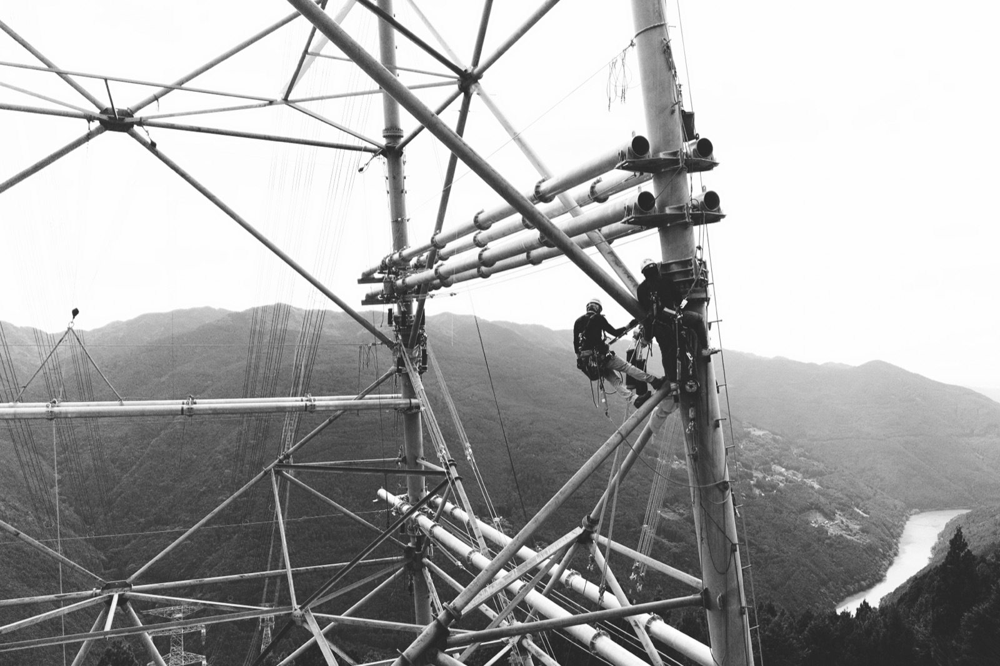

Service 01
新設鉄塔の組立工事
電力会社の新規送電ルートに合わせ、基礎工事完了後の現場で鉄骨を一段ずつ組み上げていきます。高さ数十メートルから百メートル超の鉄塔まで、工事条件に応じて工法を選定します。
01 ABOUT
普段見上げる空。そこには目には見えない電気の道があります。 送電線鉄塔は街や山に立ち、発電所から運ばれる電力の通り道として、 私たちの暮らしを静かに支え続けています。
日本全国には約 25 万基もの送電線鉄塔。 当社はそれらを組み立てるプロフェッショナルとして、 生活に欠かせない電気を安全に届ける役割を担っています。
会社情報を見る →
FIGURES
02 / SERVICES
送電線鉄塔の新設・建替・解体を、台棒工法とクレーン工法を使い分けて担当します。 右へスクロールして 1 つずつご覧ください。
事業内容の詳細 →Service 01
電力会社の新規送電ルートに合わせ、基礎工事完了後の現場で鉄骨を一段ずつ組み上げていきます。高さ数十メートルから百メートル超の鉄塔まで、工事条件に応じて工法を選定します。
Service 02
老朽化した鉄塔の建替工事、役目を終えた鉄塔の解体工事を担当します。送電を継続したまま隣接位置で組み立てる活線近接作業にも対応しています。
Method 01
塔上に設置した台棒を支点に、ワイヤーとウインチで鉄骨を引き上げる伝統的な工法。重機が入りにくい山間部や急峻な地形でも対応できる、送電線鉄塔工事の基幹技術です。
Method 02
未舗装地でも安定するラフタークレーンと、塔体貫通型のクライミングクレーンを、現場条件に応じて使い分けます。超高圧送電線の大型鉄塔まで対応可能です。
03 SAFETY
高所作業を本業とする私たちにとって、無災害は何よりの誇りです。 技術と情熱をもって、社会に価値を提供し続けることに、職人としての矜持を感じています。 一日の作業の前には、必ず全員で手順と危険源を確認する。 当たり前のことを当たり前に積み重ねることが、約 920 基の実績を支えています。
04 AWARDS
2024 年 6 月、一般社団法人 送電線建設技術研究会の第 68 回定時総会において、 当社会長 (創業者) が 功労賞 を受賞いたしました。
功労賞は、永年にわたり送電線工事に従事し、他の模範となる者、または適切な工事の指導により幾多の工事を完成させた者に贈られる賞です。 創業 30 年で積み上げてきた現場と後進の指導が、業界の研究会から認められた一つの節目となりました。
送電線建設技術研究会 ↗05 AFFILIATION
中部電力パワーグリッドが運営する送電線工事会社のネットワーク LINE MAN に所属。 電力インフラの安定供給を支える協力会社として、中部地方の送電線工事に従事しています。
LINE MAN 公式サイト ↗